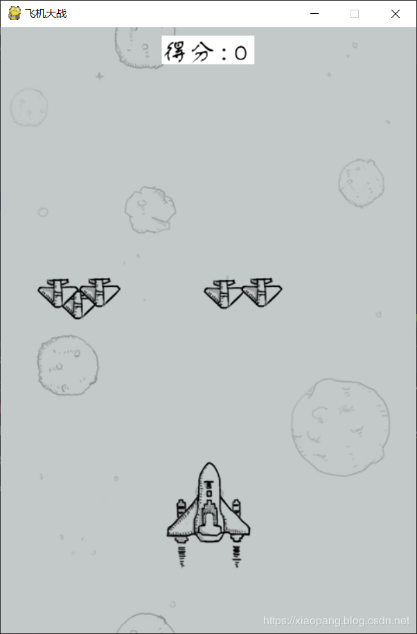

原文出处:本文由博客园博主上海小胖提供。
原文连接:https://www.cnblogs.com/moonhmily/p/11682195.html
原文连接:https://www.cnblogs.com/moonhmily/p/11682195.html
这几天在重温微信小游戏的飞机大战，玩着玩着就在思考人生了，这飞机大战怎么就可以做的那么好，操作简单，简单上手。
帮助蹲厕族、YP族、饭圈女孩在无聊之余可以有一样东西让他们振作起来！让他们的左手 / 右手有节奏有韵律的朝着同一个方向来回移动起来！
这是史诗级的发明，是浓墨重彩的一笔，是……
在一阵抽搐后，我结束了游戏，瞬时觉得一切都索然无味，正在我进入贤者模式时，突然想到，如果我可以让更多人已不同的方式体会到这种美轮美奂的感觉岂不美哉？
所以我打开电脑，创建了一个 plan_game.py……
先看效果图

操作环境
- 操作系统：windows10
- python版本：python 3.7
- 代码编辑器：pycharm 2018.2
- 使用模块：os,sys,random,pygame
因为实现代码使用到了一个pygame的第三方模块，没有的先 pip install 一下，这里顺便提供一个比较好的pygame的教程.
https://eyehere.net/2011/python-pygame-novice-professional-index/
具体实现
- 首先我们先指定素材文件的文件目录.方便我们后面的使用。这些素材已经全部上传至公众号Python专栏，后台回复：飞机大战，即可获得。
import os
# 得到当前文件夹下面的material_images目录的路径
source_dir = os.path.join(os.path.dirname(os.path.abspath(__file__)), 'material_images')- 实现一个Game类，用来完成这个游戏的主要逻辑。
import pygame
class Game():
def __init__(self, background_image_path, size=(480, 700), title='飞机大战', font_name='方正舒体', font_size=30, speed=2000):
'''
:param background_image_path: 背景图片的路径地址
:param size: 游戏窗口的大小
:param title: 游戏窗口的标题
:param font_name: 指定字体
:param font_size: 指定字体大小
:param speed: 背景图滚动整个窗口一次所用时间，单位为ms
'''
self.size = size
self.screen = pygame.display.set_mode(size)
self.title = title
self.background_image_path = background_image_path
self.background = pygame.image.load(self.background_image_path).convert()
# 设置字体对象，得到系统中自带的字体
self.font = pygame.font.SysFont(font_name, font_size)
# 得到Clock对象，我们可以使用它来获取距离上次绘制图像的时间
self.clock = pygame.time.Clock()
# 背景图初始位置
self.height = 0
# 使用窗口的高度处于滚动的时间，就能得到每ms滚动的距离
self.every_ms_move_distance = self.size[1] / speed # 2秒
# 分数
self.score = 0
# 存放所有的敌机
self.enemies = []
def show_score(self):
'''
显示分数, 在窗口的的最上方距离上边距10px， 左右居中
'''
pass
def set_time_passed(self):
# 控制画 的帧， 越大越快
# 得到上一次绘制图像到到现在的时间, ms
self.time_passed = self.clock.tick()
def draw_background(self):
'''
绘制背景图片，一直向下滚动，营造飞机一直往上面飞的感觉
'''
# 每次移动的距离 = 每ms移动的距离 * 上次到现在的时间（ms）
pass
def create_enemy(self, image_path=os.path.join(source_dir,'enemy1.png'), enemy_number=5):
'''
创建敌机
:param image_path: 敌机的图片地址
:param enemy_number: 最多有几个敌机在屏幕上
'''
pass
def draw_enemies(self, time_passed, screen):
'''
绘制敌机到屏幕上，清理跑出窗口的敌机，
:param time_passed: 上次绘制导向现在经过的时间
:param screen: 绘制的窗口对象
'''
pass
def bullet_and_enemy_crash_detection(self, bullets):
'''
检测子弹是否击中敌机
:param bullets: 飞机的所有子弹
'''
pass
def plan_and_enemy_crash_detection(self, plan, allow_crash_size=None):
'''
检测敌机与飞机是否相撞
:param plan: 飞机对象
:param allow_crash_size: 允许飞机碰撞的大小，只有左右有效
'''
pass
def draw_plan(self, plan, time_passed):
'''
绘制飞机
:param plan: 飞机对象
:param time_passed: 距离上次绘制的时间
:return:
'''
pass
def game_over(self):
'''
游戏结束
'''
while True:
# 绘制背景图
pass
def run(self):
'''
游戏入口函数，开始函数，主体函数
:return:
'''
# 设置游戏窗口的大小
pygame.display.set_caption(self.title)
# 初始化一个飞机对象
plan = Plan()
while True:
# 如果飞机自毁完成, 游戏结束, 调用game_over函数
pass
# 检测监听事件
pass
# 检测上下左右的移动案件.
# w,a,s,d 和 上,下,左,右键都可以
# 然后执行plan.update函数，改变飞机的位置
pass
# 子弹和敌机的碰撞检测
self.bullet_and_enemy_crash_detection(plan.bullets)
# 飞机与敌机的碰撞检测
self.plan_and_enemy_crash_detection(plan)
# 设置属性time_passed的值， 距离上次的时间，方便后面使用
self.set_time_passed()
# 绘制背景图片
self.draw_background()
# 显示分数
self.show_score()
# 生成敌机
self.create_enemy()
# 绘制敌机
self.draw_enemies(time_passed=self.time_passed, screen=self.screen)
# 绘制飞机
self.draw_plan(plan=plan, time_passed=self.time_passed)
# 绘制子弹
plan.draw_bullets(time_passed=self.time_passed, screen=self.screen)
# 显示我们的图像
pygame.display.update()
这里说以下怎样查看自己的系统中有哪些自带的字体.
pygame.font.get_fonts()，这个函数就能够得到系统中所有的自带字体文件。不过，当我们游戏中有中文的时候，我们也得选择支持中文的字体，否则的话是显示不出中文的。
- 实现DestroyAnimationMixin类，这个类主要是用来显示飞机或敌机的自毁动画
# 显示飞机自毁动画的Mixin类, 可用于飞机和敌机的自毁动画显示
class DestroyAnimationMixin():
def show_destroy_animation(self, time_passed, destroy_time=200):
'''
显示自毁动画
动画其实就是几张图片切换的比较快，我们的眼睛识别不出来，所以认为他是动态的，也就是动画
:param time_passed: 距离上次绘制图像到现在的时间，单位ms
:param destroy_time: 自毁动画总共显示时间，单位ms
'''
# 因为我们的自毁图片有四张，需要依次显示，首先动画的效果
# self.destroy_image_position 表示第几章自毁图片，从零开始
# 如果大于等于4了，说明自毁动画显示完成，设置self.destroyed变量为True, 方便别处调用
if self.destroy_image_position >= 4:
self.destroyed = True
return
# 依次加载自毁图片
if self.time_passed >= destroy_time / 4:
self.image = pygame.image.load(os.path.join(source_dir, self.destroy_images[self.destroy_image_position])).convert_alpha()
self.destroy_image_position += 1
self.time_passed = 0
else:
self.time_passed += time_passed- 实现飞机类，完成飞机的主要操作。飞机的操作包括：飞机位置、飞机子弹、发射子弹等。
# 飞机类，继承DestroyAnimationMixin， 方便使用显示自毁动画的函数
class Plan(DestroyAnimationMixin):
def __init__(self, image_path=os.path.join(source_dir,'plan.png'), background_size=(480, 700)):
'''
:param image_path: 飞机图片地址
:param background_size: 游戏窗口大小
'''
self.background_size = background_size
self.image = pygame.image.load(image_path).convert_alpha()
self.image_size = self.image.get_size()
self.position = [(background_size[0]-self.image_size[0]) / 2, 500]
# 飞机每次移动的距离
self.every_time_move_distance = 0.5
# 飞机的子弹
self.bullets = []
# destroy association attributes， 自毁相关属性
# 开始自毁
self.start_destroy = False
# 自毁结束
self.destroyed = False
# 自毁图片
self.destroy_images = ['me_destroy_1.png', 'me_destroy_2.png', 'me_destroy_3.png', 'me_destroy_4.png']
# 自毁图片位置
self.destroy_image_position = 0
# 距离上次绘制图像到现在的时间
self.time_passed = 0
def update(self, direction):
'''
更新飞机位置
:param direction: 飞机移动方向
'''
pass
def shut(self, image_path=os.path.join(source_dir,'bullet.png')):
'''
飞机发射子弹
:param image_path: 子弹图片
'''
pass
def draw_bullets(self, time_passed, screen):
'''
绘制飞机的所有子弹
:param time_passed: 距离上次绘制图像到现在的时间
:param screen: 绘制到哪一个窗口中
'''
pass- 实现敌机类，完成敌机的主要操作。主要是用来更新位置。
# 敌机类，继承DestroyAnimationMixin， 方便使用显示自毁动画的函数
class Enemy(DestroyAnimationMixin):
def __init__(self, image_path=os.path.join(source_dir, 'enemy1.png'), speed=2000, background_size=(480, 700)):
'''
:param image_path: 敌机图片地址
:param speed: 敌机移动整个窗口需要的时间，单位ms，也就是速度
:param background_size: 游戏窗口的尺寸
'''
self.image = pygame.image.load(image_path).convert_alpha()
self.speed = background_size[1] / speed
self.background_size = background_size
self.position = [random.randint(0, background_size[0]-self.image.get_size()[0]), -self.image.get_size()[1]]
# 开始自毁
self.start_destroy = False
# 自毁完成
self.destroyed = False
# 自毁图片路径
self.destroy_images = ['enemy1_down1.png', 'enemy1_down2.png', 'enemy1_down3.png', 'enemy1_down3.png']
# 距离上次绘制图像到现在的时间
self.time_passed = 0
# 自毁图片在self.destroy_images的位置
self.destroy_image_position = 0
def update(self, time_passed):
'''
更新敌机的位置
:param time_passed: 距离上次绘制图像到现在的时间
:return:
'''
pass- 实现子弹类，完成子弹的主要操作
# 飞机子弹类
class Bullet():
def __init__(self, image_path=os.path.join(source_dir,'bullet.png'), background_size=(480, 700), plan=None, speed=1000):
'''
:param image_path: 子弹的图片地址
:param background_size: 游戏窗口大小
:param plan: 飞机对象
:param speed: 子弹飞行速度
'''
self.image = pygame.image.load(image_path).convert_alpha()
self.background_size = background_size
self.speed = background_size[1] / speed
# 子弹是否击中敌机
self.destroyed = False
self.position = self._get_position(plan)
def _get_position(self, plan):
'''
根据plan得到子弹发出位置
:param plan: 飞机对象
'''
bullet_size = self.image.get_size()
plan_width = plan.image_size[0]
x = (plan_width-bullet_size[0]) / 2
return [plan.position[0] + x, plan.position[1]]
def update(self, time_passed):
'''
改变子弹位置
:param time_passed: 距离上次绘制图像到现在的时间
'''
# 如果子弹超出屏幕或者击中敌机，就设置self.position[1]为-100,在plan.draw的时候就移除它
if self.position[1] + self.image.get_size()[1] <= 0 or self.destroyed:
self.position[1] = -100
return
# 改变的距离 = 时间 * 速率
self.position[1] -= time_passed * self.speed这样，我们就把所有的操作都实现完了，接下来只需要使用 Game().run()，就可以运行我们的游戏了。
关注公众号：Python专栏，后台回复：飞机大战，即可获得完整代码及素材包。